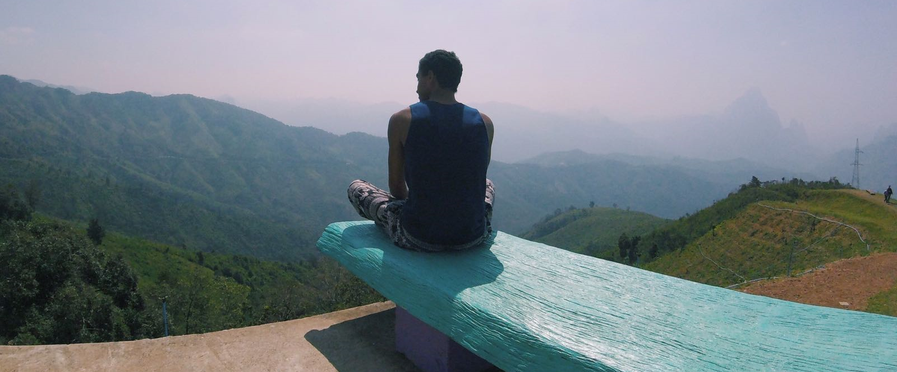

Athletics
High Jump Personal Best: 1.95m
Long Personal Best: 6.55m
I am a successful professional athlete having competed at the highest level throughout many age groups. My athletics has certainly taught me the value of perseverance and hard work and proven to me that I am capable of performing under pressure.
Notable Achievements
• 5th in the English National Champs
• Competed at Senior Professional level since 2011
• UK Ranking of within the Top 50 in High Jump every year from 2012-2017, and within Top 25 for Indoors from 2011-2017
• UK Ranking Top 100 in Long Jump, Pole Vault and 110m Hurdles
• 10 County Championship Medals
• Part of National Championship winning team for WSEH AC in 2008
• National finalist (and medallist) from 2006-2014
• Volunteered and officiated at Bedford International Games for three years running during 2011-2013.
Positions of Responsibility
• Unofficial Vice Track and Field Captain for University of Birmingham’s athletics team (2016-2017)
• Athletics Captain for Windsor Slough Eton & Hounslow Youth Development Team (2014)
• School Athletics Captain during Years 12 and 13 (2011-2013)
• Full Colours for Athletics (2012)
Drums
Level: Grade 7
Drumming Since: 2006
I knew from a young age that I wanted to play the drums, and the first chance I got to learn, upon starting grammar school, I took it. I have been playing ever since, taking official graded exams, as well as playing in school bands and person bands with friends.
Rockschool Drums Grades
• Grade 7 Merit – 2013
• Grade 6 Merit – 2012
• Grade 5 Merit – 2011
• Grade 4 Merit – 2010
• Grade 2 Distinction – 2008
• Grade 1 Distinction – 2007
Official Positions
• Drummer in the John Hampden Wind Band 2010-2011
• Lead Drummer in John Hampden African Percussion Group 2010-2013
• Full Colours for Music 2012
Travelling
Athletics Ivy League Tour - Yale, Harvard, Cornell, and Penn
Charity Escape and Evade - Birmingham to Amsterdam in 60 hours without spending a penny
South East Asia - Thailand, Cambodia, Vietnam, Laos
Australia and New Zealand
READ MORE
Custom Built PC
Originally Built: 2015
CPU: Intel Core i5-4690K 3.5GHz Quad-Core Processor
GPU: XFX Radeon R9 390X 8GB
Memory: Kingston HyperX Fury White 16GB (4 x 4GB) DDR3-1866 Memory
Storage: Sandisk SSD PLUS 120GB 2.5" Solid State Drive
Additional Storage: Seagate SSHD 1TB 3.5" 7200RPM Hybrid Internal Hard Drive
Motherboard: MSI Z97-GAMING 5 ATX LGA1150 Motherboard
CPU Cooler: Cooler Master Hyper 212 EVO
Power Supply: Corsair CX 600W 80+ Bronze
Case: NZXT Phantom 410 (White) ATX Mid Tower Case
OS: Microsoft Windows 10 Pro OEM (64-bit)
Monitor: QNIX QX2710 27" 1440p 90Hz LED Monitor